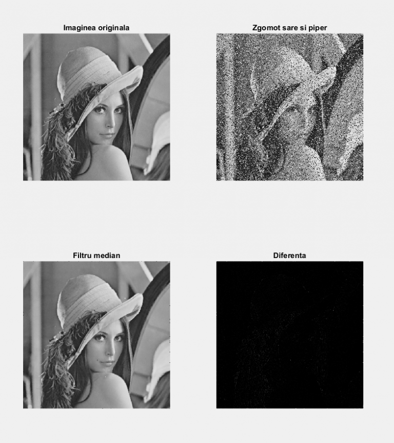
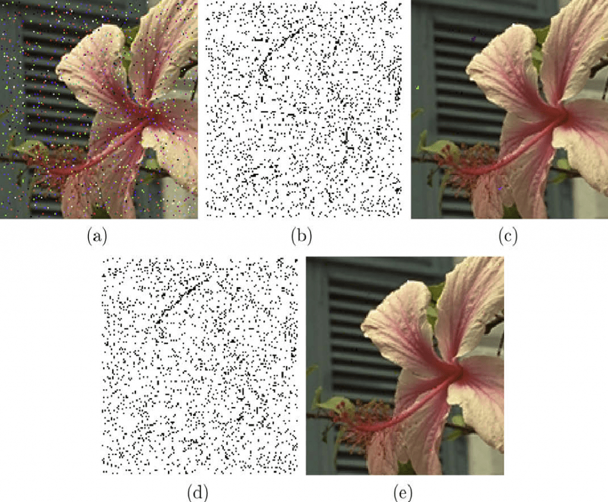

Eliminarea zgomotului și netezirea (smoothing) sunt tehnici de pre-procesare a imaginilor foarte folosite în multe aplicații de computer vision. Obiectivul general este suprimarea zgomotului și în același timp păstrarea informației complete despre contururilor de demarcație a obiectelor. În marea majoritate a cazurilor, despre zgomot se presupune că este de tip Gaussian (aditiv) sau de tip impuls (sare-și-piper).
Unul din cele mai folosite filtre pentru eliminarea zgomotului este filtrul de tip median. Pornind de la o imagine g, se construiește o aproximație u a ei, prin înlocuirea intensității fiecărui pixel din g cu valoarea mediană a vecinilor săi dintr-o vecinătate pătratică de dimensiune dxd (d este un număr impar iar pixelul considerat este plasat în centrul vecinătății). Aplicând un asemenea filtru, în multe situații, discontinuitățile în intensitate și prin urmare, contururile se păstrează, totodată zgomotul fiind diminuat. Generalizări ale acestei metode au fost propuse pentru imaginile color, cum ar fi, filtrele mediane vectoriale, filtre vectoriale direcționale sau filtrarea direcțională folosind distanțe. Un dezavantaj al acestor metode de filtrare este faptul că sunt implementate uniform pe toți pixelii din imagine și modifică și pixelii care nu sunt corupți de zgomot. Pentru a obține rezultate mai bune în eliminarea zgomotului, o etapă preliminară ar trebui să stabilească pixelii afectați de zgomot și apoi să se aplice tehnica de eliminare a zgomotului doar acelor pixeli. Dacă valorile aberante sunt căutate în fiecare componentă de culoare în parte și zgomotul e eliminat doar în componenta respective, rezultatul poate duce la modificarea conținutului de culoare al imaginii prelucrate. Pentru cazul zgomotului Gaussian și impuls a fost propusă o metodă de filtrare neliniară, adaptivă, multivariată. Este folosită valoarea medie într-o vecinătate locală a fiecărui pixel pentru a estima valoarea originală a pixelului, acest tip de prelucrare putând duce la estomparea imaginii și eliminarea detaliilor.
Alte abordări pentru netezirea unei imagini cu păstrarea contururilor sunt metodele variaționale sau filtrările de tip șoc. O tehnică variațională standard pentru segmentare constă în aflarea unei aproximări u a imaginii originale g și de asemenea în găsirea unei mulțimi de contururi K astfel încât să fie minimizată o funcție cost de tip Mumford-Shah.. Această funcțională de cost are două componente, una este diferența dintre imaginile g și u, iar a doua este legată de lungimea contururilor din K. Ponderile asociate acestor două componente joacă un rol semnificativ în rezultatul și calitatea procesului de îmbunătățire a imaginii g. Determinarea acestor ponderi este în sine o problemă de cercetare.
În filtrele șoc, valorile intensităților din interiorul regiunilor se deplasează spre frontiera regiunii de-a lungul liniilor de gradient. Muchiile într-o imagine corespund fronturilor de șoc staționare. În filtrarea șoc valorile maxime ale intensității și cele minime se deplasează din interiorul regiunii spre exterior și se întâlnesc la frontiera dintre regiuni. O astfel de metodă face să fie maximizat contrastul în zona de demarcație a regiunilor dintr-o imagine. Aceste filtre netezesc imaginile în sensul că presupun că fiecare regiune are intensitate constantă, totuși nu reușesc să elimine zgomotul izolat cum este cel de tip sare-și-piper.
Tehnicile de tip „peer-group”([1]-[5]) sunt algoritmi neliniari care netezesc imaginile și elimină zgomotul de tip impuls, încercând să rezolve limitările tehnicilor descrise anterior. Ideea de bază este aceea de asocia fiecărui pixel un grup de pixeli vecini, acești pixeli fiind folosiți pentru modificarea valorii intensității pixelului curent. Conceptul de „peer-group” al unui pixel este definit ca fiind setul de pixeli vecini care sunt asemenea cu acesta conform unei distanțe sau unei măsuri de similitudine. Acest concept este folosit cu succes pentru a concepe algoritmi de detecție și suprimare a zgomotului în imaginile alb-negru și color.
Există multe moduri de a alege grupurile „peer” pentru un pixel dat. În general, elementele din același grup ar trebui să fie caracterizate de o valoare comună. Pentru o singură imagine, grupul ar putea fi compus din pixeli vecini cu intensități similare. Pentru o secvență de imagini, pixelii vecini în spațiu și în timp cu intensități similare și valori ale vitezelor asemănătoare s-ar putea constitui într-un grup folosit pentru filtrare. Pentru fiecare pixel s-ar putea asocia valori legate de textură iar grupul s-ar putea forma folosind apropierea în valorile de textură.
Pentru procesarea de tip „peer-group” un rol important îl joacă alegerea parametrilor (dimensiunea d a vecinătății pătratice a pixelului și numărul n de elemente alese din această vecinătate pentru a forma grupul). Alegerea automată a parametrilor poate duce la o filtrare care să păstreze muchiile și colțurile și în același timp să realizeze o netezire semnificativă a regiunilor uniforme din imagine.

Metodă rapidă de tip „peer-group” pentru eliminarea zgomotului de tip impuls
În comparație cu tehnicile precedente „peer-group”, această nouă abordare [5] îmbunătățește raportul dintre eficiența computațională (metoda este aplicată doar atunci când distanța dinte pixeli sau măsura de similitudine folosită îndeplinește proprietatea inegalității triunghiulare) și calitatea filtrării (includerea unei etape de prelucrare a pixelilor în detecția zgomotului).
Imaginile prelucrate sunt imagini RGB, astfel încât fiecare pixel este reprezentat de un vector de trei componente de numere întregi cu valori între 0 și 255. Vom nota cu W vecinătatea pătratică a pixelului curent x din care se selectează pixelii de tip „peer” în felul următor:

Metoda propusă în [5] constă într-o etapă de detecție a zgomotului și una de filtrare a zgomotului. Etapa de detecție este la rândul ei realizată în doi pași. În primul pas, imaginea este divizată în blocuri disjuncte, după care se efectuează o clasificare rapidă a pixelilor în trei categorii: necorupți, corupți și nediagnosticați. Se fixează o valoare întreagă m din mulțime {1,2, …, n2-1}. Dacă mulțimea P(x,d) are mai mult de (m+1) elemente, orice pixel din P(x,d) este declarat necorupt iar pixelii care sunt în vecinătatea W dar nu sunt în P(x,d) sunt declarați ca fiind nediagnosticați. Dacă P(x,d) are mai puțin de (m+1) elemente, pixelul x este declarat temporar ca fiind corupt iar ceilalți pixeli din W sunt declarați ca nediagnosticați.
IF P(x,d) are mai mult de (m+1) elemente
THEN orice y din P(x,d) este necorupt și orice z din W \ P(x,d) este nediagnosticat
ELSE x este declarat temporar corupt și orice alt pixel din W\{x} este nediagnosticat
În al doilea pas al etapei de detecție se reanalizează pixelii nediagnosticați pentru a-i include într-una din cele două categorii: corupți sau necorupți. Pentru aceasta, se consideră o nouă valoare întreagă și se aplică următorul procedeu pentru fiecare pixel nediagnosticat x centrat în vecinătatea W: dacă mulțimea P(x,d) conține m′ pixeli necorupți atunci x este declarat necorupt. Altfel, dacă mulțimea P(x,d) are mai mult (m+1) elemente, orice pixel din P(x,d) este declarat necorupt, în situația contrară x este declarat corupt.
următorul procedeu pentru fiecare pixel nediagnosticat x centrat în vecinătatea W: dacă mulțimea P(x,d) conține m′ pixeli necorupți atunci x este declarat necorupt. Altfel, dacă mulțimea P(x,d) are mai mult (m+1) elemente, orice pixel din P(x,d) este declarat necorupt, în situația contrară x este declarat corupt.
IF P(x,d) are mai mult de m′ pixeli necorupți
THEN x este etichetat ca necorupt
ELSE
IF P(x,d) are mai mult de (m+1) elemente
THEN orice pixel din P(x,d) este declarat ca necorupt
ELSE x este considerat corupt
În această etapă se consideră că dacă un pixel este similar cu un număr prestabilit (m′) de pixeli necorupți atunci și el este necorupt. Această condiție ajută la îmbunătățirea acurateței detectării zgomotului în vecinătatea muchiilor și a regiunilor cu detalii unde este dificil de găsit m vecini similari (cum este cerut în prima fază de detecție a pixelilor corupți). La finalul celor doi pași fiecare pixel este etichetat fie ca fiind afectat de zgomot (corupt) fie necorupt.
După acest pas de detecție a zgomotului, se va aplica fiecărui pixel corupt, o metodă adecvată de filtrare. Pentru simplitatea computațională, în acest algoritm s-a folosit filtrul de mediere aritmetică, acest filtru se aplică doar pixelilor necorupți din vecinătatea W aleasă. Dacă totuși vecinătatea W aleasă nu conține pixeli necorupți ea va trebuie fi mărită.
O a doua versiune a acestui algoritm se poate obține dacă operația de detectare a zgomotului este realizată pe fiecare componentă de culoare în parte, și anume, un pixel este declarat corupt dacă cel puțin una din componentele sale R, G, sau B este coruptă. Pixelii zgomot sunt filtrați în același fel cum am descris mai sus.
În rezumat, algoritmul constă în următorii pași:
Imaginea este împărțită în blocuri disjuncte W de dimensiune nxn (n=3,5, …), centrul blocului fiind pixelul x=x(W)
Pentru fiecare bloc W și centru x se fac următoarele operații:
Se calculează P(x,d);
IF P(x,d) are mai mult de (m+1) elemente
THEN orice y din P(x,d) este necorupt și orice z din W\P(x,d) este nediagnosticat
ELSE x este declarat temporar corupt și orice alt pixel din W\{x} este nediagnosticat
Pentru fiecare pixel nediagnosticat y
Se calculează P(y,d);
IF P(y,d) are mai mult de m′ pixeli necorupți
THEN y este etichetat ca necorupt
ELSE
IF P(y,d) are mai mult de (m+1) elemente
THEN orice pixel din P(y,d) este declarat ca necorupt
ELSE y este considerat corupt
Pentru fiecare pixel corupt x care e centrul unui nucleu de filtrare W
IF W nu conține pixeli necorupți
DO
Lărgește fereastra W
UNTIL W conține cel puțin un pixel necorupt
Înlocuiește intensitatea pixelului x cu media aritmetică a intensităților pixelilor necorupți din blocul W.
În Figura 1 este un exemplu de eliminare a zgomotului de tip impuls folosind cele două metode descrise. Metoda prezentată este o metodă robustă, eficientă și precisă de eliminare a zgomotului de tip impuls.

Referințe bibliografice
Kenney, C., Deng, Y., Manjunath, B. S., & Hewer, G. (2001). Peer group image enhancement. IEEE Transactions on Image Processing, 10(2), 326-334.
Celebi, M., Kingravi, H., Uddin, B., & Aslandogan, Y. (2007). Fast switching filter for impulsive noise removal from color images. Journal of Imaging Science and Technology, 51(2), 155-165.
Laia, Y. R., Chunga, K. L., Yangb, W. N., Chena, C. H., & Lina, L. C. (2011). Novel Peer Group Filtering Method Based On The CIELab Color Space For Impulse Noise Reduction. In Proc. 21st International Conference on Computer Graphics and Vision (pp. 124-127).
Deng, Y., Kenney, C., Moore, M. S., & Manjunath, B. S. (1999, July). Peer group filtering and perceptual color image quantization. In Circuits and Systems, 1999. ISCAS’99. Proceedings of the 1999 IEEE International Symposium on (Vol. 4, pp. 21-24). IEEE.
Camarena, J. G., Gregori, V., Morillas, S., & Sapena, A. (2010). Some improvements for image filtering using peer group techniques. Image and Vision Computing, 28(1), 188-201.